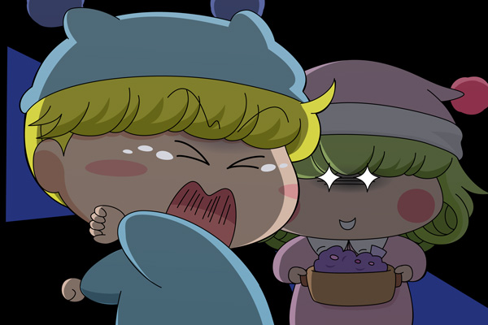

ミルモ「なにぃ、行き止まり！？」
・・・くそぅ、今さら引き返すわけにはいかねぇぜ・・。
しばらくここに身を隠してやりすごすとするか・・。
って、だいたい何でオレがこうして隠れなきゃいけないんだ？
「・・・ルモさま～～。せっかくのお料理が冷めてしまいますわ～～」
ひぇ～～～っ。
追ってこなくていいっつーの！
毎度毎度変なもん食わされるオレのことも少しは心配・・・ってリルムに言っても無駄だよな・・。
そういえば今日はムルモと一緒に変な芋虫を捕まえていたっけ。
さすがに今日は何があっても食べるわけにはいかねぇ！
「・・・ミルモさま～。隠れても無駄ですわ～～」
「・・・ルモさま～～・・・・」
「・・・」
・・・行ったか！？
だけどまだ安心できねぇから、今夜はここに隠れて一晩明かすとするか。
・・・・・ゴロゴロ・・・・・
ん？ 外は雷か！？
また親父のやつがおふくろを怒らせたのか？
・・・・ゴロゴロ・・・・・ゴロゴロ・・・
だんだん雷がひどくなっているような・・。
・・・・・・ゴロゴロ・・ピシャーーーーーン！！！！
ミルモ「ひっ！？」

リルム「み～～つけた！」
ミルモ「ひぇ～～～～っ、リルム、ずっとそこにいたのか！？」
リルム「さぁミルモ様！ わたくしの愛の手料理を冷めないうちに
どうぞ召し上がってくださいませ」
ミルモ「誰か助けてくれ～～～っ」
この後ミルモは、じっくり時間をかけて、リルムに恐怖の料理をお口あ～んさせられ続けるのであった・・・。
第８回目のお題は「壁際に追い詰める」。追い詰める役として、私は真っ先にリルムを連想します。
それなのに、気が付けば全く需要のないミルリル絵を描いてしまいました(^◇^;)。もう少し愛のある絵にすればよかったなぁと後悔してます。
今回の絵にある「行き止まりに追い込むリルム」ですが、この構図は１９８９年にファミコンディスクシステムで発売された『ファミコン探偵倶楽部PartII うしろに立つ少女（任天堂）』を元ネタに選びました（誰もわからないか^^;）。元ネタ・・・というかトラウマと言うべきか。雷の鳴る中、真犯人に追われるラストシーンはファミコン史に残る恐怖シーンとして有名だったりします。
そして１３年後の２００２年、アニメミルモ第１話にてウェディングドレスを着たリルムから逃げ回るミルモ。いきなり背後で「ミルモ様？」と現れたリルムに「うぎゃーっ」と驚くシーンもまた軽くトラウマだったりします(汗)。皆さんにもそういう思い出はありますでしょうか？
次回のお題は「間接キス」です。
(2013/1/27)